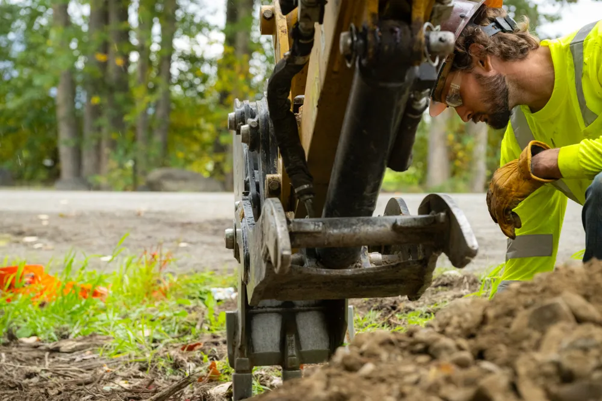
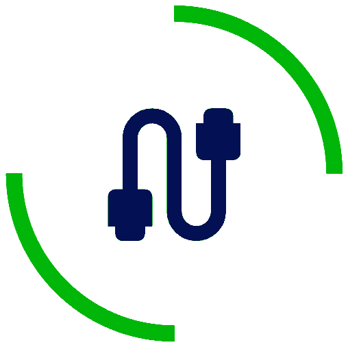
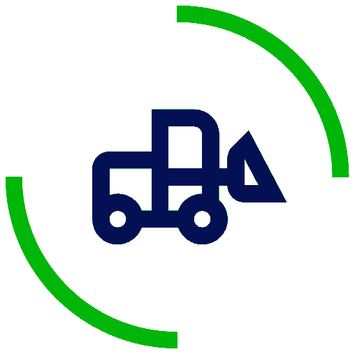
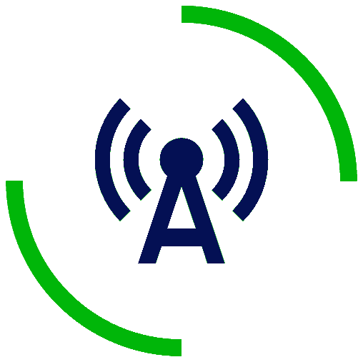
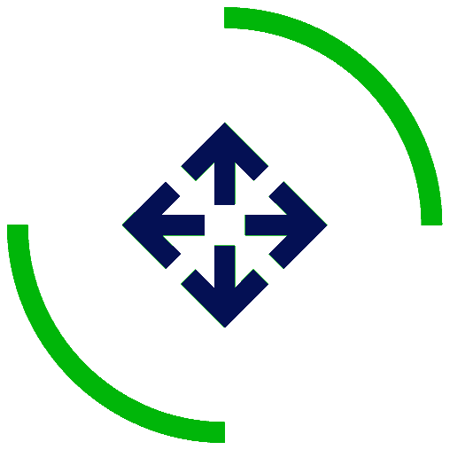
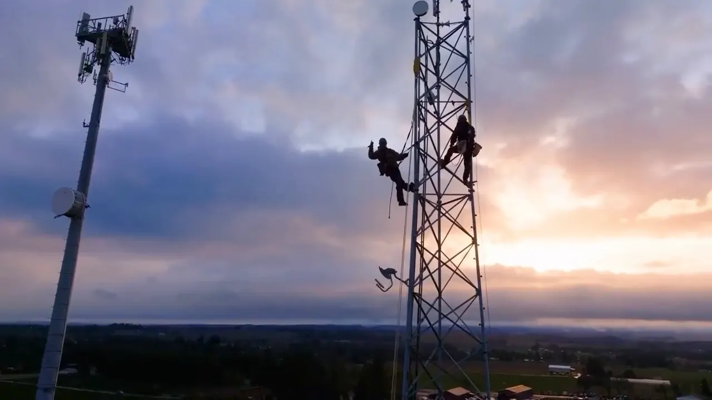
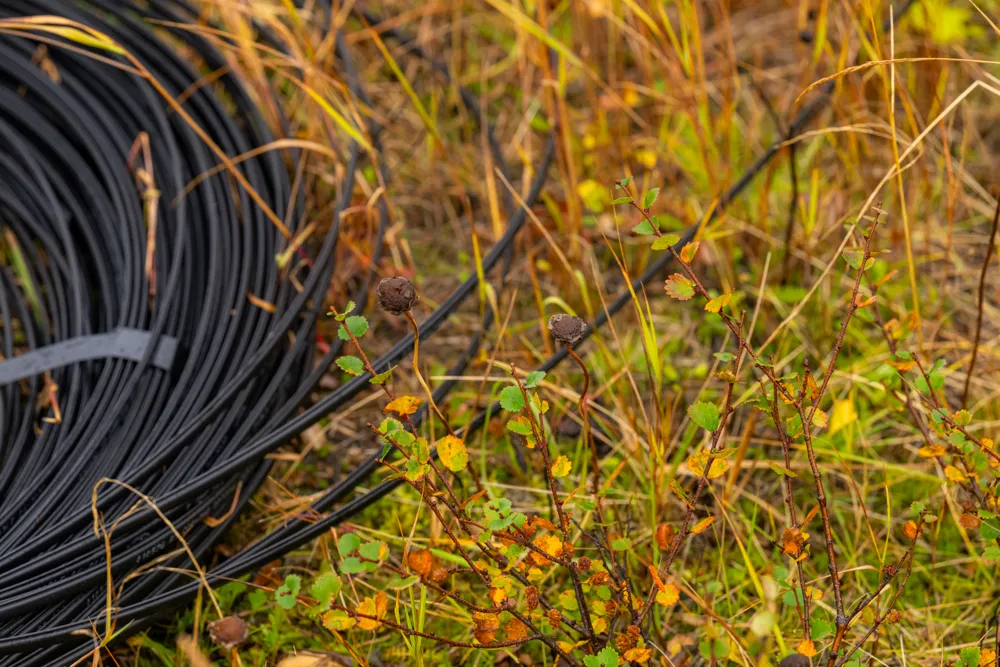

Wireline construction
Crews place aerial strand on poles or conduit beneath streets, then pull and splice fiber route by route, building the wired networks that bring connections to homes, businesses and communities.
After design and locating, before testing, maintenance and restoration.
What we build
Every part of a wired network, from the backbone route to the connection at the home.

Fiber construction
Fiber routes for long-haul, metro and last-mile networks, aerial and underground.

Underground construction
Conduit placed by directional drilling, trenching and plowing, with every surface restored.

Aerial construction
Strand, lashing and attachments on existing poles, built around the lines already there.

Splicing & testing
Fusion splicing and end-to-end testing, so every route is proven before it carries traffic.
In the field
The work is sequenced so streets, sidewalks and driveways stay open as much as possible.

- 1Place the pathway
Aerial strand goes up on existing poles, or conduit goes in beneath the street.
- 2Pull and splice
Fiber is pulled through the pathway and spliced, route by route.
- 3Test and restore
Every route is tested end to end, and every surface that was opened is restored.
Our wireline companies
Local operating companies that build wired networks. Search for the one nearest your project.
Build America's networks
Wireline crews are hiring across the trades. Find the work that fits you, near you.


Plan your next route.
Tell us where the work is and what kind of network it is, and we will connect you with the local team.